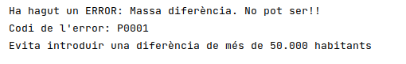
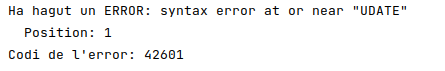

6.1 - Captura d'errors
En els nostres programes escrits en Java, hauríem de controlar els errors, per a que no es trenque de forma incontrolada la seua execució.
En concret, en l'accés a BD Relacionals hauríem de capturar els possibles errors que ens dóna el SGBD. Els errors són per múltiples causes: error en la connexió, sentència SQL errònia... I també els que provoquem nosaltres amb un trigger fent RAISE EXCEPTION.
Per a capturar un error, ja sabem que en Java s'utilitza l'estructura try ... catch. Concretament, els errors que ens torna PostgreSQL són del tipus PSQLException. En l'excepció podrem obtenir el tipus d'error amb un codi, i el missatge que dóna el SGBD
Per tant el més habitual serà capturar l'error i en el tractament mirar quin tipus d'error ha donat, per poder realitzar unes accions o unes altres. Els tipus d'error tornats per PostgreSQL es poden consultar en aquesta pàgina: https://www.postgresql.org/docs/current/errcodes-appendix.html
Concretament podrien ser interessants els que tenen els següents codis d'error:
- 42601: Erro de sintaxi (la sentència SQL és incorrecta)
- 42P01: Taula inexistent
- ...
- P0001: Error de RAISE EXCEPTION (que són els provocats per nosaltres)
En el següent exemple, intentem actualitzar els número d'habitants de Castelló. Com que teníem un trigger que impedia l'actualització quan la diferència entre la població antiga i la nova era de més de 50.000 persones, i com que la població que tenim és de 173.841, si posem una nova població de 750.000 ho ha d'impedir. Capturem l'error i mirem si el codi de l'error és el P0001, i aleshores traem un missatge particularitzat. Si no, únicament mostrem el missatge que ens ve des del SGBD.
public class Exemple_6_1_Trigger {
public static void main(String[] args) throws ClassNotFoundException, SQLException {
String url = "jdbc:postgresql://89.36.214.106:5432/geo_1cfsy_0000x";
String usuari = "geo_1cfsy_0000x";
String password = "geo_1cfsy_0000x";
Connection con = DriverManager.getConnection(url, usuari, password);
try {
Statement st = con.createStatement();
st.executeUpdate("UPDATE POBLACIONS SET poblacio=750000 WHERE nom='Castelló de la Plana'");
st.close();
}
catch (PSQLException ex) {
System.out.println("Ha hagut un " + ex.getMessage());
System.out.println("Codi de l'error: " + ex.getSQLState());
if (ex.getSQLState().equals("P0001"))
System.out.println("Evita introduir una diferència de més de 50.000 habitants");
}
}
}L'eixida del programa serà aquesta:

Mentre que si canviem la sentència i posem UDATE en compte de UPDATE, l'error serà diferent:

Llicenciat sota la Llicència Creative Commons Reconeixement CompartirIgual 2.5